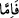

Allah Teâlâ, Hz. Âdem ve Havvâ’ya kendilerinden zelle sâdır olduktan sonra “Dedi
ki: “Birbirinize düşman olarak hepiniz oradan” cennetten yeryüzüne “inin!” Bu,
görünüşte azarlama ve ayıplama hitabıdır. Ancak mânâda kemâle erdirme ve
şereflendirme hitâbıdır.
Râğıb der ki: “
”, taşın yukarıdan aşağıya düşmesi gibi zorunlu olarak inmek
demektir. Nitekim Allah Teâlâ: “Taşlardan öylesi vardır ki... Allah korkusundan
yukarıdan aşağı düşer.” (el-Bakara, 2/74) buyurur.
“el-Hübût” kelimesi, insan için kullanıldığında hafife almak maksadıyla kullanılır.
“el-İnzâl (indirme)” ise bunun aksinedir. Çünkü Allah Teâlâ “el-inzâl”i Kur’an’ın ve
meleklerin, yağmurun ve diğer şerefine dikkat çektiği şeyler için zikretmiştir. “el-
Hübût”u ise şu âyetlerde olduğu gibi buğzu bildirmek için zikretmiştir: “Bir kısmınız
diğerine düşman olarak inin” dedik.” (el-Bakara, 2/36) “Öyle ise oradan in, orada
büyüklük taslamak senin haddin değildir.” (el-A‘râf, 7/13)
“Birbirinize düşman olarak” yâni, geçim konusunda bazı çocuklarınız diğerlerine
düşman olarak demektir. Nitekim insanlar birbirinin elinden çekip alma ve savaş
hâlindedir. Buna göre bu âyet “Fakat (Allah) onlara iyi, güzel bir çocuk verince,
kendilerine verdiği şeyde Allâh’a ortak koşmaya başladılar.” (A’râf, 7/190) âyetinin
benzeri olmuş olur. Hz. Âdem ve Havva iki kişi oldukları halde onlar zürriyetin aslı
olmaları bakımından onlar hakkında çoğul hitabı kullanılmıştır. Yâni ey Âdem
zürriyyeti, bâzınız bâzınıza düşmandır.”
et-Te’vîlâtü’n-Necmiyye”de şöyle der: “Allah onların kendisinden başka sevgilileri
olmaması için onların arasında düşmanlık yarattığına işâret etmektedir. Nitekim Allah
Teâlâ İbrâhim (a.s.)’dan naklen şöyle buyurmuştur: “Onlar benim düşmanımdır.
Yalnız âlemlerin Rabb’i (benim dostumdur).” (eş-Şuarâ, 26/76-77)
Diğer varlıklar içinde seçkin olmayı Âdem’e has kıldığı için onu denemek için
diğerleriyle birlikte yeryüzüne indirdi ve onu doğru yola erdireceğini vaad ederek şöyle
buyurdu: Ey Âdem ve Havvâ’nın zürriyyeti, “Artık benden size hidayet” kitab ve
peygamber “geldiğinde,” “
” kelimesi, şüphe ifade eder. Bu, kitap ve peygamber
yoluyla hidayetin gelmesinin vukûu kesin olmadığını bildirmek içindir. Allah Teâlâ
dilerse hidâyete erdirir, dilerse erdirmez. Hiçbir şey O’nun için vâcib/zorunlu değildir.
Şöyle demek de mümkündür: Peygamberin ve kitabın gelmesi, gerçekleşmesi ve vukûu
zorunlu olmadığı için âyette şüphe ifâdesiyle belirtilmiş, bununla birlikte
gerçekleşmesinin ve vukûunun tercih edildiğine delâlet etmek üzere şart harfi ve fiil
te’kidli olarak gelmiştir.
“Kim benim hidayetime uyarsa” yâni kim Kitab’a îmân eder ve ve peygamberi tasdik
ederse “o” yaşadığı sürece dünyada doğru yoldan “sapmaz ve” âhirette de azâb
olunmak sûretiyle “bedbaht olmaz.” Yâni âhirette sıkıntı ve zahmete düşmez, cezâ ve
azâba mübtelâ olmaz.